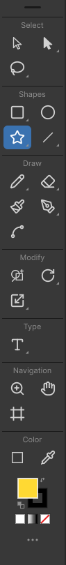
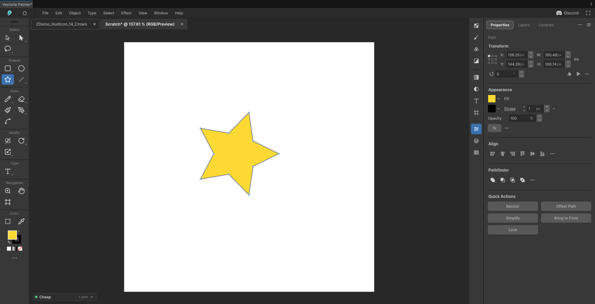
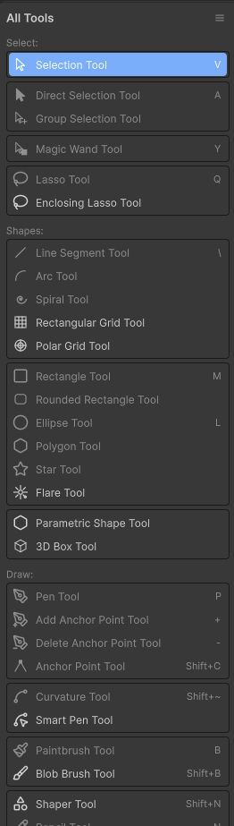

Drawing Tools
Tools in the toolbar and how to use them.
Tools are on the left of the window, in groups. Pick one by clicking it or pressing its shortcut. A small triangle in the corner of a button means more tools share that button (for example Rectangle and Rounded Rectangle, or Polygon and Star). Click and hold, or right-click, to choose another, and the button keeps the last one you used. The help bar at the bottom tells you how the active tool works.

The tools you will use most
| Group | Tool | Shortcut | Use it to |
|---|---|---|---|
| Select | Selection | V | Select, move and scale whole shapes. Shift+Click adds to the selection and Alt+Drag duplicates. |
| Direct Selection | A | Select and drag single anchor points, segments and handles. | |
| Lasso | Q | Drag a loop around the shapes you want. | |
| Shapes | Rectangle / Rounded Rectangle | M | Drag a box. Up and Down arrows change the corner radius, Shift makes a square, Alt draws from the centre. |
| Ellipse | L | Circles and ovals. | |
| Polygon | - | Drag from the centre. Up and Down arrows change the number of sides. | |
| Star | - | Drag from the centre. Up and Down arrows change the number of points. | |
| Line Segment | \ | Straight lines. | |
| Draw | Pen | P | Click for corner points, drag for smooth curves, click the first point to close. |
| Curvature | Shift+~ | Click points and the curve follows by itself. | |
| Pencil | N | Draw freehand. | |
| Paintbrush | B | Draw freehand with a brush. | |
| Eraser | Shift+E | Erase filled areas. [ and ] change the size. | |
| Modify | Shape Builder | Shift+M | Select shapes, then click or drag regions to merge them. Alt deletes regions. |
| Rotate, Reflect, Scale | R O S | Transform the selection around a point. | |
| Free Transform | E | Free, perspective and distort transforms. | |
| Scissors | C | Click a path to cut it there. | |
| Type | Type | T | Click for point text, drag for text in a box. |
| Navigation | Zoom | Z | Click to zoom in, Alt+Click to zoom out, drag a box to zoom to it. |
| Hand | H | Pan. Holding Space does the same with any tool. | |
| Artboard | Shift+O | Drag on empty canvas to add an artboard. | |
| Color | Gradient | G | Edit a gradient fill on the canvas. |
| Eyedropper | I | Copy the colours of another shape. |
Drawing a shape
Choose a shape tool and drag on the canvas. The new shape is selected, so you can change its colours in the Properties panel or pick a swatch in the Libraries panel.

All Tools
The toolbar shows a short list. Click the ... button at the bottom of it to open the All Tools drawer, which lists every tool with its shortcut. It also has tools that are not in the toolbar: Magic Wand, Group Selection, Add and Delete Anchor Point, Smart Pen, Blob Brush, Shaper, Arc, Spiral, grids, Warp, Knife, Mesh, Live Paint, measuring tools and more.

Developer mode hides some tools
In Developer mode the tools that the Shader resolver cannot draw are hidden: the type tools, the symbol tools, Blend and Mesh. Switch to Creative mode to get them back. In the All Tools drawer, greyed entries are the tools that are not in the toolbar. See Creative and Developer Mode.
What the game draws
Everything you draw is saved in the document, but not every renderer draws everything. Live effects (shadow, glow, blur), patterns, text, images, symbols, brushes and blend modes are only drawn by the Painter2D resolver (UI Toolkit only, slower). The default Shader resolver and the MeshBatch resolver skip them. See Choosing a resolver.